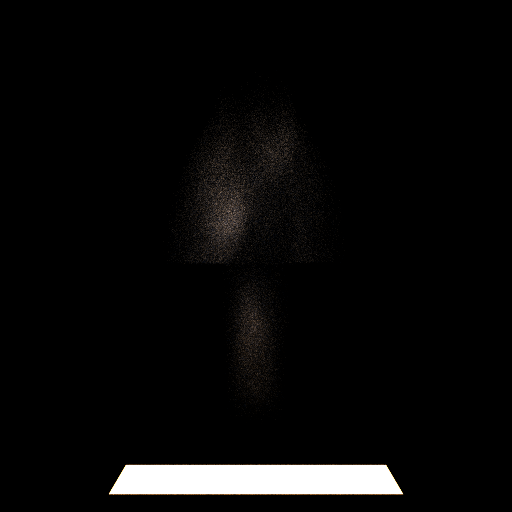

CSE 168 Final Project — Volumetric Smoke Grenade Rendering
Camdon Dreisbach · Spring 2026 · UC San Diego ·
Project PDF
Overview
This projects extends the already existing Optix path tracer built through homeworks 1-4 with GGX BRDFS,
next-event estimation, and multiple importance sampling. I wanted to work on rendering volumetric lighting/shading
of the CS2 smoke grenades. The goal is to render a photorealistic smoke grenade screen (not exactly how far I will get)
Implementation thoughts in progress:
-Initally started working on converting the .VDB file format into somethin that can be interpretable
-Found https://github.com/AcademySoftwareFoundation/openvdb parse what I need use "NanoVDB"
-Started work on Volumetric Box geometries
-I worked in render.cpp for some time to develop a connection to existing Optix to load VDB files
-implemtend on handling ray-AABB intersections for Optix for volumetric objects
-created file for the Volumetric integrator but skipped it to build some of the framework to test
-Add loading geometries into buildscene() to add a volume if a scene had one
-Current VDB is broken as imports through cmake are having issues
-quite embarassing the current Implementation through failure collecting test vdb files
-right now the usage it a randomly generated image of possible smoke cloud volumes
Preliminary Image

Technical Approach
Volumetric rendering requires solving the radiative transfer equation through a heterogeneous medium. The core components are:
Delta tracking (Woodcock tracking) — unbiased free-path sampling through heterogeneous volumes using a majorant extinction coefficient.
Henyey-Greenstein phase function — single parameter g controls forward/backward scattering anisotropy; analytically importance-sampled.